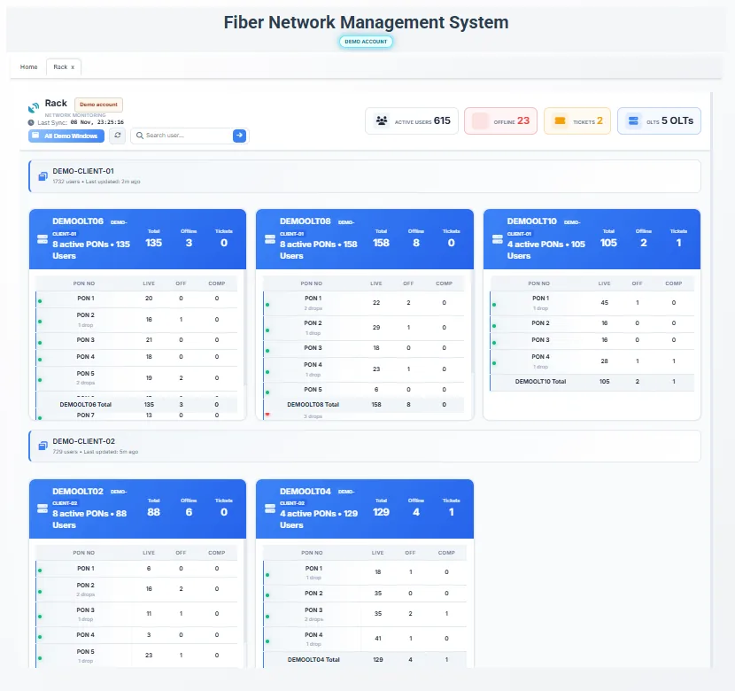

Power analysis & drop alerts
Review optical power readings and investigate power-drop events that may reveal problems before some customers report them.
See your fiber network clearly, analyze optical power changes, identify users linked to a fiber core and bring customer support and network operations into a smarter workflow.
Request an ISP DemoCustom implementation and pricing based on your ISP setup.
An example dashboard view from our Fiber Network Management System.

Review optical power readings and investigate power-drop events that may reveal problems before some customers report them.
Trace users linked to a selected fiber core and review their latest available online/offline and connection information.
Visualize junctions, wires, fiber cores and route relationships to help locate affected network segments.
Use OLT-linked data, PON associations, customer connection status and signal information for troubleshooting.
Organize customer complaints, status and historical records.
Review tracked outages and network event history.
Support staff location, attendance and payroll-related operations where configured.
Features depend on integration with your OLT/network data, deployment configuration and chosen modules. Monitoring and notification delivery are not guarantees of fault detection.
A JC map helps an ISP view fiber junctions, wires, cores and route relationships in one visual network record.
Core-to-user mapping can help teams identify customers associated with a selected core and review their latest available connection status. Availability depends on the configured data sources.
No. Alerts depend on monitoring data, configuration and delivery availability. They can help teams discover certain signal issues earlier, but cannot guarantee every fault will be detected before a customer reports it.
Yes. The scope and supported modules can be discussed for your network and operating workflow during a demo.
Yes. Complaint management workflows can include complaint status, customer history and relevant network observations, depending on the configured modules.
Power analysis uses available optical signal readings and network events to help identify changes in connection health. Data freshness and supported metrics depend on the OLT and monitoring integration.
Discuss your network layout, existing monitoring tools and operations with our team.
Request a Personalized Demo